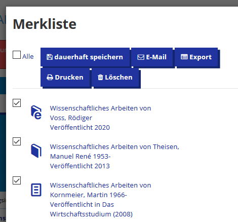
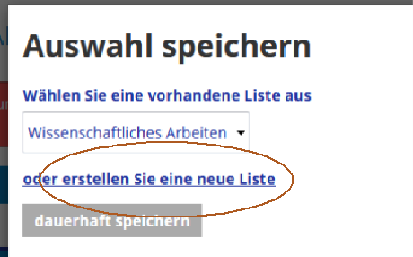
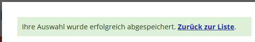
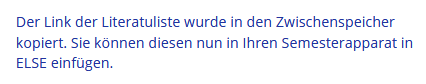
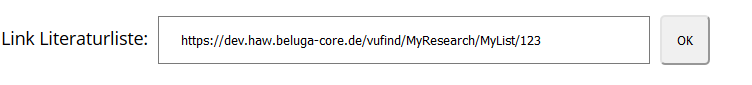

Durch Klick auf die
 können Sie Einträge auswählen und „dauerhaft speichern“:
können Sie Einträge auswählen und „dauerhaft speichern“:1. Wenn Sie Tutor*in sind und für eine*n Lehrende*n einen Semesterapparat anlegen möchten, benötigen Sie für den entsprechenden EMIL-Raum mindestens die Rechte eines EMIL-Tutors (Gast-Rechte oder Studierenden-Rechte reichen nicht).
2. Im EMIL-Lernraum legen Sie einen Semesterapparat (ELSE) wie folgt an:
- Klick auf „Bearbeiten einschalten“
-
Klick auf „Material oder Aktivität anlegen“
- ELSE auswählen
- Speichern und anzeigen
3. Um Medien in den Semesterapparat einzubinden, klicken Sie auf das Icon „Neues Medium hinzufügen“.
4. Über den Button „Im HAW-Katalog recherchieren und Literaturliste erstellen“ wechseln Sie in den HAW-Katalog.
5. Im HAW-Katalog müssen Sie sich mit Ihrer eigenen Bibliothekskennung anmelden (Sie benötigen nicht die Bibliothekskennung des Lehrenden) und können dann eine Literaturliste erstellen. Sie können sowohl Bücher und e-Books als auch Artikel in die Literaturliste aufnehmen.
6. Eine Literaturliste erstellen:
Führen Sie Ihre Recherche im HAW-Katalog durch und markieren Sie alle gewünschten Medien mit dem Stern-Symbol
.
Durch Klick auf die
können Sie Einträge auswählen und „dauerhaft speichern“:

Nun können Sie neue Liste erstellen:

Vergeben Sie einen Namen und setzen Sie die Zugangsbeschränkungen auf „Öffentlich“:

Nach „dauerhaft speichern“ erscheint die folgende Meldung. Wechseln Sie „Zurück zur Liste“…

…und klicken Sie dort auf:
Sie sollten dann folgende Bestätigung sehen:

Info: Der Listen-Link besteht aus der vollständigen Adresse der Literaturliste, z.B.:
„https://dev.haw.beluga-core.de/vufind/MyResearch/MyList/123“

8. Nun wird jedes Medium in Ihren Semesterapparat aufgenommen.
Je nach Medientyp haben Sie versch. Optionen:
a. Print-Bücher können entweder als reine Literaturhinweise aufgenommen werden (diese sind sofort „aktiv“) oder für einen physischen Semesterapparat in der Fachbibliothek vor Ort bestellt werden.
Im zweiten Fall wird dieses Buch von den Bibliotheksmitarbeiter*innen bearbeitet und ist dann
„aktiv“, wenn es im Semesterapparat der Fachbibliothek zur Verfügung steht.
b. E-Books und E-Artikel aus dem Bestand des HIBS sind sofort „aktiv“. Hinweis: Diese E-Medien sind nur innerhalb des HAW-Netzes bzw. per VPN-Zugang nutzbar.
c. Print-Artikel können im Moment nur als Literaturhinweise eingebunden werden. Ein Digitalisierungsservice für Print-Artikel bzw. Auszüge aus Print-Büchern ist
in Planung.
9. Bei allen Medien haben Sie die Möglichkeit, einen Hinweistext für die Studierenden einzugeben.
10. Bei Print-Büchern, die in Ihrem physischen Semesterapparaten stehen sollen und durch die Bibliotheksmitarbeiter*innen bearbeitet werden müssen, haben Sie außerdem
die Möglichkeit, Anmerkungen für die Bibliothek einzutragen.
11. Finden Sie bei Ihrer Suche nicht den gewünschten Titel, können Sie einen Erwerbungsvorschlag abgeben (Button „Erwerbungsvorschlag für den Semesterapparat“).
12. Die Reihenfolge der Medien im Semesterapparat kann per drag&drop verändert werden.
13. Mit dem Icon „Bearbeiten…“ können Sie die allgemeinen Informationen des Semesterapparates bearbeiten.
Tragen Sie bitte hier im Feld „Bemerkungen für die HIBS-Mitarbeiter*in…“ ein, für wen dieser Semesterapparat angelegt wird, z.B. „Semesterapparat für Prof. Else Müller“,
damit die Bibliotheksmitarbeiter*innen den Semesterapparat korrekt dem/der Lehrenden zuordnen können.
An dieser Stelle können darüber hinaus
a. weitere allgemeine Informationen bearbeitet werden (z.B. Änderung der Fachbibliothek oder des Semesters),
b. die Ex- und Importfunktion genutzt werden (s. 17.),
c. Hinweise für die Studierenden und/oder das Bibliothekspersonal eingetragen werden.

14. Über das Icon „Rückgabe“
(bei Print-Büchern, die sich im physischen Semesterapparat befinden)
bzw. „Deaktivieren“ (bei
E-Books und Literaturhinweisen) können Sie einzelne Titel aus ELSE entfernen (lassen).
15. Bei Print-Büchern wird darüber hinaus der jeweils aktuelle Bearbeitungszustand des Mediums angezeigt:
a. neu bestellt (von Ihnen neu in Ihren Semesterapparat aufgenommen)
b. wird bearbeitet (von der zuständigen HIBS Mitarbeiterin)
c. ist aktiv (für die Studierenden in der ELSE-Liste sichtbar)
d. wird entfernt (wurde von Ihnen zurückgegeben oder die Ausleihfrist ist abgelaufen)
e. inaktiv (für die Studierenden in der ELSE-Liste nicht sichtbar)
16. Die Print-Bücher im physischen Semesterapparat werden für das aktuelle Semester dort vorgehalten und danach wieder in den normalen Bibliotheksbestand einsortiert.
17. Falls Sie den Inhalt einer ELSE-Liste auch für das folgende Semester verwenden wollen, nutzen Sie die Exportfunktion beim aktuellen SA und fügen Sie den Inhalt über „Importieren“ in den neuen Semesterapparat ein (Funktion „Export“ / „Import“ bei „Bearbeiten der allgemeinen Infos des Semesterapparates“).